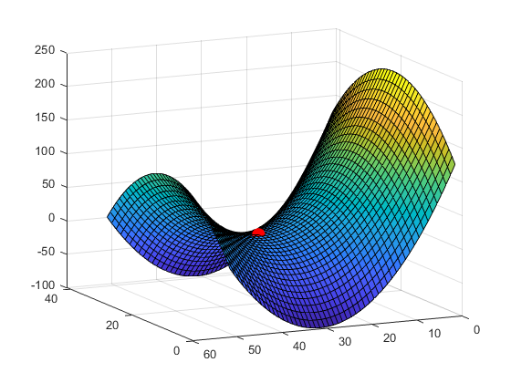
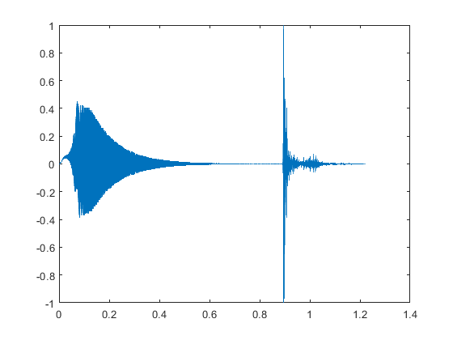
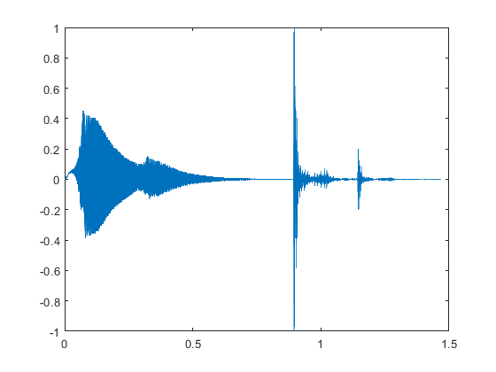

Week 8
Contents
First part
distance = get_distance('Seattle, WA','Miami, FL')
distance =
3723
Second part
type('simple.txt') charnum = char_counter('simple.txt','a') charnum = char_counter('Frankenstein-by-Shelley.txt','?')
This file should have exactly three a-s...
charnum =
3
charnum =
220
Third part
create an interesting surface
[X,Y] = meshgrid(-15:0.5:10,-10:0.5:10); Z = (X.^2-Y.^2)'; % find saddle points indices = saddle(Z) % plot surface figure(1) surf(Z); hold on % mark saddle points with red dots in the same figure for ii = 1:size(indices,1) h = scatter3(indices(ii,2),indices(ii,1),Z(indices(ii,1),indices(ii,2)),'red','filled'); h.SizeData = 120; end % adjust viewpoint view(-115,14); hold off
indices =
31 21
 Fourth part
img = imread('vandy.png');
figure(2);
imshow(img);
figure(3);
imshow(blur(img,2))
figure(4);
imshow(blur(img,10))
figure(5);
imshow(blur(img,20))
Fifth part
Load splat which adds y and Fs to the workspace
load splat % Call echo_gen to create the new audio data output = echo_gen(y, Fs, 0.25, 0.2); % The time between points is 1/Fs; dt = 1/Fs; % Plot the original sound figure(6) plot(0:dt:dt*(length(y)-1), y) % Plot the new data to see visualize the echo figure(7) plot(0:dt:dt*(length(output)-1), output) sound(y, Fs) pause(5) sound(output, Fs) 